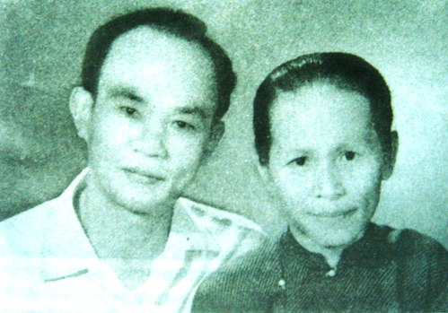

Thi tướng Huỳnh Văn Nghệ là một nhà-thơ-chiến-sĩ, được quân dân miền Đông Nam Bộ trong thời kỳ kháng chiến chống Pháp gọi bằng cái tên thân thương - anh Tám Nghệ. Ông sinh tại làng Tân Tịch, huyện Tân Uyên, tỉnh Biên Hòa (nay là xã Thường Tân, huyện Tân Uyên, tỉnh Bình Dương) vào ngày 2 tháng 2 năm 1914. Sau khi học xong sơ học ở trường Pétrus Ký và bắt đầu tìm đến với cách mạng. Khi khởi nghĩa Nam Kỳ bị thất bại, thực dân Pháp đàn áp dã man người yêu nước, ông qua Thái Lan và tham gia phong trào cách mạng của Việt kiều. Giữa thập kỷ 1940, ông trở lại Sài Gòn và tham gia giành chính quyền trong Cách mạng tháng Tám. Khi Nam Bộ kháng chiến nổ ra, ông tập hợp lực lượng, lập chiến khu, chỉ huy Chi đội 10 Vệ quốc đoàn, rồi làm Tư lệnh khu VII, Tỉnh đội trưởng Thủ Dầu Một - Biên Hòa. Sau hiệp định Genève 1954, ông tập kết ra Bắc đảm nhiệm chức vụ phó thủ trưởng Cục Quân huấn, sau đó chuyển ngành qua Bộ Lâm nghiệp. Đầu năm 1975, ông tham gia trong đoàn quân chiên thắng trở lại Sài Gòn - Gia Định, thành phố đã hằn dấu chân tuổi trẻ của ông trong những ngày sóng gió. Ông mất tại thành phố Hồ Chí Minh năm 1977, thọ 64 tuổi và được an táng tại quê nhà.

Thi tướng Huỳnh Văn Nghệ và vợ
Di sản văn nghệ của ông không nhiều nhưng chỉ riêng với những dòng thơ trong bài thơ “Nhớ Bắc” cũng đủ để tên tuổi của ông sống với nhiều thế hệ người Việt Nam - trong đó có quân dân miền Đông Nam Bộ gian lao mà anh dũng. Những trang văn - thơ của Huỳnh Văn Nghệ, thấm đẫm tình cảm của một nhà thơ - chiến sĩ - đối với xã hội, về cuộc đời và với quê hương, với bạn bè, đồng chí. Tấm lòng ông là tiêu biểu của những tấm lòng của người đi mở cõi - vẫn ngời rạng cùng đất miền Đông, cùng Nam Bộ thành đồng.